Terraform’s dependency graph decides creation order automatically from resource references — the diagram traces that, then follows the separate verification script that proves each resource is actually USABLE, not just created.

| Node | Location | What it does |
|---|---|---|
| DEPCHECK | main.tf (implicit) | aws_sqs_queue.ingestion's redrive_policy references aws_sqs_queue.ingestion_dlq.arn — Terraform detects this reference automatically and orders creation accordingly, no explicit depends_on needed. |
| GETARN | Terraform's apply engine | Between creating the DLQ and the main queue, Terraform reads back the DLQ's REAL ARN from LocalStack's API response — the main queue's redrive policy references the actual provisioned resource, not a guessed value. |
| VERIFYSCRIPT | verify_resources.py:run_all_verifications() | Reads resource identifiers from terraform output -json — never hardcoded — so a naming-convention change in main.tf would surface as a clear failure here, not a silent mismatch. |
| ALLPASS | verify_resources.py | Each of the 3 resources gets a REAL write-then-read round trip (put_object/get_object, put_item/get_item, send_message/receive_message) — proving actual usability, since terraform apply succeeding only proves the CREATE api call worked. |
The DLQ is created first (nothing depends on IT), its ARN is read back, then the main queue is created referencing that real ARN in its redrive policy.
DEPCHECK(Yes) → ORDERED → CREATEDLQ → GETARN → CREATEMAIN → ALLDONE(5 resources)The S3 bucket and DynamoDB table have no dependency on each other or the queues — Terraform creates them concurrently, observed finishing within the same few seconds.
BUILDGRAPH → INDEPENDENT(bucket, table) → PARALLELCREATEAll 3 resource types pass a real write-then-read check through boto3 — the actual proof this infrastructure works, beyond a green terraform apply.
ALLDONE → VERIFYSCRIPT → S3TEST(ok) + DDBTEST(ok) + SQSTEST(ok) → ALLPASS(Yes) → VERIFIEDdepends_on needed for the DLQ-ARN-in-redrive-policy relationship.terraform output -json rather than hardcoding them, so a naming-convention change in the Terraform config surfaces as a clear verification failure rather than a silent mismatch.depends_on — cleaner, more idiomatic Terraform that self-documents the actual dependency relationship through the reference itself, at the cost of requiring the dependency to be expressible as an attribute reference (which it is here — the DLQ ARN naturally flows into the redrive policy).terraform apply succeeding alone can't detect.The main queue's redrive_policy attribute contains an expression referencing aws_sqs_queue.ingestion_dlq.arn — during Terraform's plan phase, it builds a dependency graph by parsing every resource's attributes for exactly these cross-resource references, and any resource whose configuration references another resource's attribute is automatically ordered after that resource's creation. This is better than explicit depends_on because the dependency is self-documenting and impossible to get out of sync — the code that expresses 'the main queue needs the DLQ's ARN' IS the code that establishes the ordering, so there's no way to update one without the other silently going stale, which is exactly the risk with a separate, manually-maintained depends_on declaration that isn't tied to an actual data dependency.
The classic case: a resource that's created successfully but is functionally broken due to an IAM permission gap, a misconfigured bucket policy, an incorrect VPC/security-group setting, or a resource property that's syntactically valid but semantically wrong (e.g. an SQS queue created with a redrive policy pointing at the wrong DLQ ARN due to a typo in a variable reference) — all of these pass terraform apply cleanly, because Terraform's job is applying the configuration as written, not validating that the configuration achieves the intended functional outcome. A real production incident I'd expect this to catch: a Terraform-provisioned S3 bucket with a bucket policy that inadvertently denies the application's own IAM role — apply succeeds, the bucket exists, and the first real write from the application fails, exactly the gap a real put/get round-trip check closes before it ever reaches production traffic.
LocalStack emulates AWS APIs faithfully enough to validate configuration correctness and resource-dependency logic, but it doesn't perfectly replicate every real-AWS behavior — IAM policy evaluation edge cases, real service quotas and throttling behavior, actual cross-region/AZ networking characteristics, and subtle API behavior differences that only the real service exhibits. I'd close the gap with a staged rollout: run this exact same Terraform config and verification script against a real AWS sandbox/dev account before ever touching production, treating the LocalStack pass as a fast, cheap first gate (catches config-logic bugs early and cheaply) rather than the final proof — the same 'cheap check first, expensive check before the real thing' pattern this whole portfolio uses elsewhere (e.g. project 12's guardrail ordering).
Local state means each engineer has their own copy of the state file — if two people run terraform apply concurrently (or even sequentially without pulling the latest state), Terraform has no way to detect the conflict, and you can end up with state drift (Terraform's record of reality diverging from actual infrastructure) or, worse, two applies racing and corrupting each other's changes. Before a second engineer touches this, I'd move state to a remote backend — S3 for the state file itself plus DynamoDB for state locking (ironically using the same two resource types this project already provisions) — so every apply first acquires a lock, preventing concurrent applies entirely, and everyone reads from the same authoritative state rather than a stale local copy.
Hardcoding creates two coupled sources of truth — the actual naming logic in the Terraform config, and a second, independent guess at those names in the verification script — which will silently drift the moment either one changes without the other being updated in lockstep, exactly the kind of bug that passes code review because nothing looks wrong in either file individually. Reading from terraform output -json means the verification script always asks Terraform 'what did you actually name this resource', so there's exactly one source of truth; if a naming convention changes in main.tf, the verification script automatically picks up the new name and either verifies correctly against it or fails clearly if something else is actually wrong — it can never silently check the wrong resource due to a stale hardcoded name.